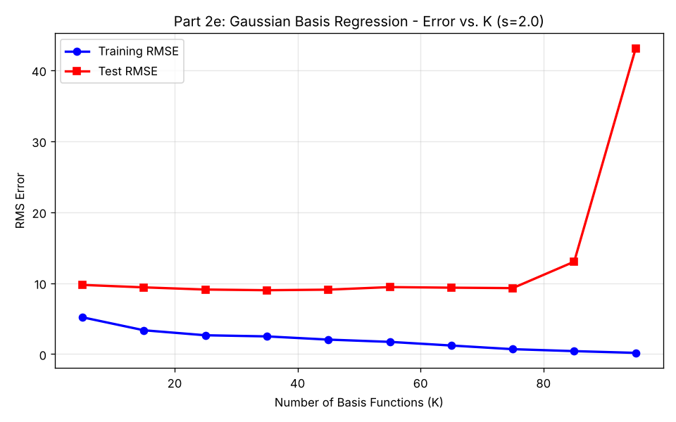
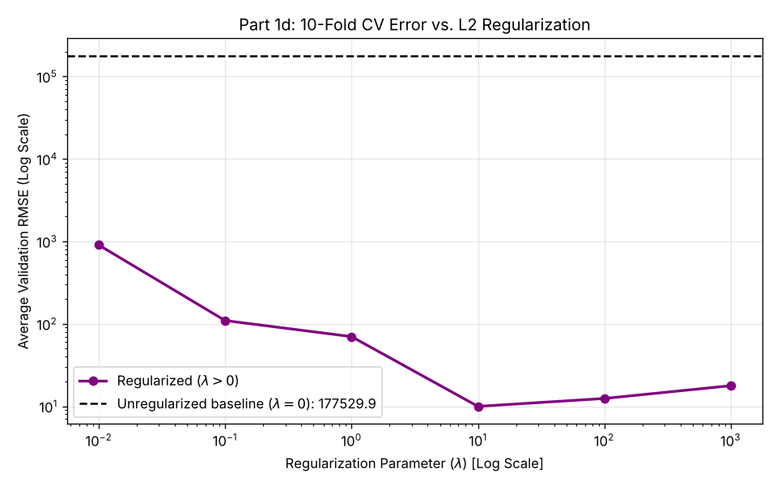
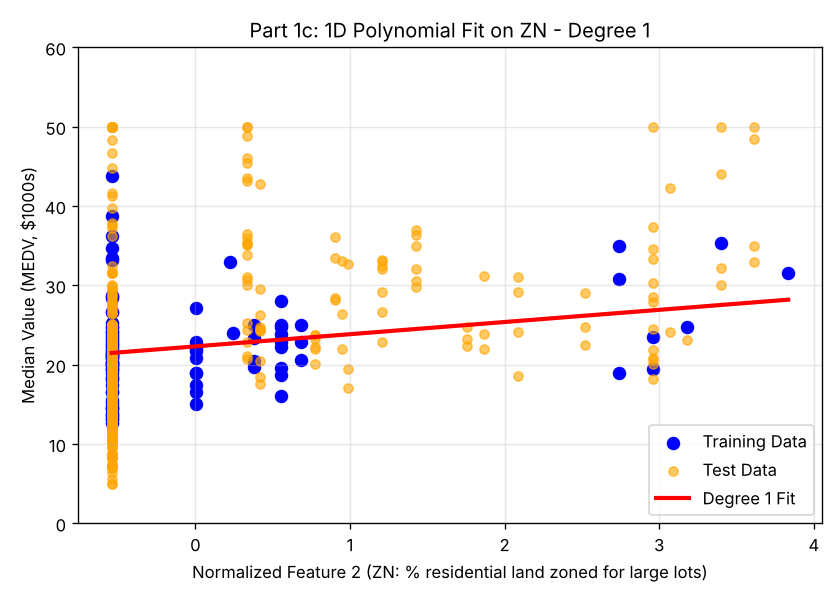
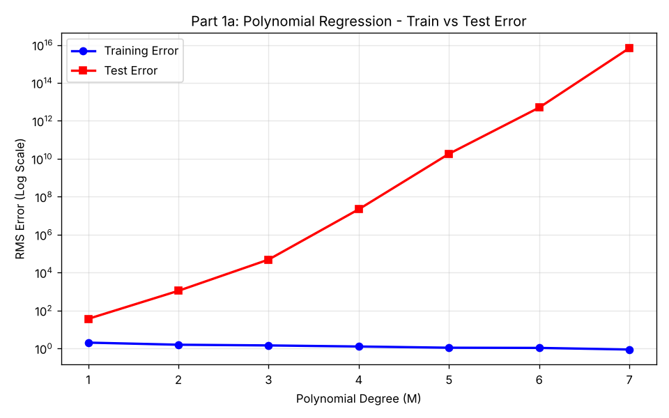
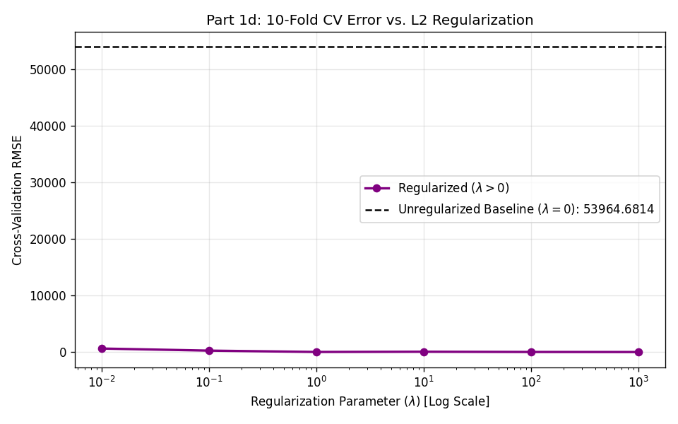
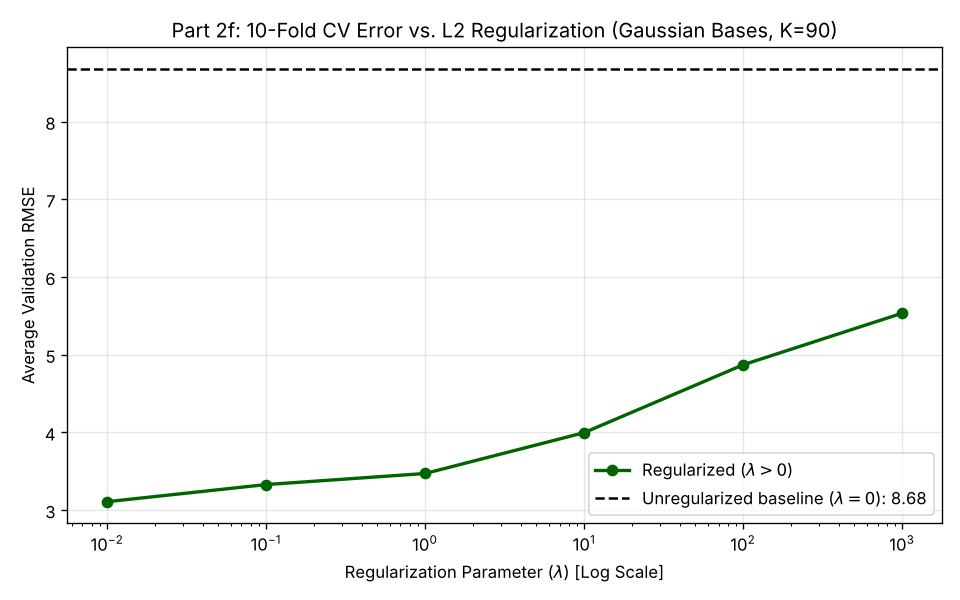
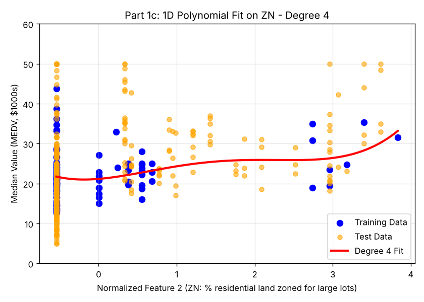

Linear regression with polynomial and Gaussian basis functions on the Boston Housing dataset (predicting median house value, MEDV, in \$1000s). All numbers below come directly from running a2part1.py and a2part2.py.
The first 100 rows of the Boston Housing data are used for training and the remaining 406 for testing. Each of the 13 input features is standardized (zero mean, unit variance) using the mean and standard deviation of the 100 training rows only. CHAS (the Charles River dummy) is 0 for every training row, so its standard deviation is zero; I set it to 1 to avoid dividing by zero, which leaves that column as all zeros in training. The polynomial design matrix has a bias column plus $x_i, x_i^2, \dots, x_i^M$ for every feature $i$, with no cross-terms, giving $1 + 13M$ columns. Unregularized weights are the least-squares solution $\mathbf{w} = \mathbf{\Phi}^{+}\mathbf{y}$, computed with np.linalg.lstsq (an SVD pseudoinverse). That matters here because the all-zero CHAS columns make $\mathbf{\Phi}^T\mathbf{\Phi}$ singular. Regularized fits use $\mathbf{w} = (\mathbf{\Phi}^T\mathbf{\Phi} + \lambda \mathbf{I})^{-1}\mathbf{\Phi}^T\mathbf{y}$, without penalizing the bias. Errors are reported as RMS error in MEDV units (\$1000s).
1a) Polynomial Degrees 1 through 7

| Polynomial Degree ($M$) | Training RMSE | Test RMSE |
|---|---|---|
| 1 | 2.0372 | $3.64 \times 10^{1}$ |
| 2 | 1.5781 | $1.10 \times 10^{3}$ |
| 3 | 1.4491 | $4.87 \times 10^{4}$ |
| 4 | 1.2705 | $2.19 \times 10^{7}$ |
| 5 | 1.0966 | $1.84 \times 10^{10}$ |
| 6 | 1.0725 | $5.02 \times 10^{12}$ |
| 7 | 0.8815 | $6.88 \times 10^{15}$ |
Comment: Training error falls steadily with degree (2.04 → 0.88), as expected when each degree adds 13 more parameters for the same 100 points. Test error is poor even at degree 1 (36.4, compared with 9.83 for simply predicting the training mean) and then grows by roughly two to three orders of magnitude per degree. The main cause is the split rather than the model. The dataset is ordered by town, so the first 100 rows are mostly low-crime suburbs. CRIM ranges from 0.006 to 1.6 in training but goes up to 89 in the test set, which is about 229 training standard deviations away. A linear term in CRIM is already badly wrong that far out, and $x^M$ makes it worse with every degree. NOX, RAD, TAX and B show the same kind of extrapolation to a lesser degree. So the plot shows overfitting (training error keeps dropping while test error rises) on top of severe extrapolation from a training set that isn't representative of the test set.
1b) Degree 1 Model Weight Inspection
Weights from the degree 1 fit on all 13 standardized features ($w_0$ is the bias). Because the inputs are standardized, each $w_i$ is the change in predicted MEDV (\$1000s) for a one-standard-deviation increase in that feature, holding the others fixed.
| Coefficient | Feature Description | Learned Weight Value |
|---|---|---|
| $w_0$ | Bias (intercept) | 22.3090 |
| $w_1$ | Per capita crime rate (CRIM) | -1.3380 |
| $w_2$ | Proportion of residential land zoned for lots over 25,000 sq.ft. (ZN) | +0.1230 |
| $w_3$ | Proportion of non-retail business acres (INDUS) | -0.5311 |
| $w_4$ | Charles River dummy variable (CHAS) | 0.0000 |
| $w_5$ | Nitric oxides concentration (NOX) | +1.0027 |
| $w_6$ | Average rooms per dwelling (RM), 6th feature | +4.1956 |
| $w_7$ | Proportion of owner-occupied units built prior to 1940 (AGE) | -2.1663 |
| $w_8$ | Weighted distance to five Boston employment centres (DIS), 8th feature | +0.0107 |
| $w_9$ | Index of accessibility to radial highways (RAD) | -0.1938 |
| $w_{10}$ | Full-value property-tax rate (TAX) | -0.3486 |
| $w_{11}$ | Pupil-teacher ratio (PTRATIO) | +0.2613 |
| $w_{12}$ | $1000(\text{Bk} - 0.63)^2$ (B) | +0.1811 |
| $w_{13}$ | Percentage lower status of the population (LSTAT) | +0.1488 |
The bias is listed as $w_0$, so the weight the assignment calls "$w_5$" (the 6th feature, RM) is $w_6$ in this table. CHAS gets exactly 0 because it never varies in the training set.
RM (6th feature), $w_6 = +4.20$: This one looks reasonable. More rooms means bigger houses, so the value should go up, and RM is by far the strongest predictor in the training rows (its correlation with MEDV there is 0.85). In raw units, one training standard deviation of RM is about 0.49 rooms, so the model adds roughly \$8,600 per extra room. That's the right sign and a plausible size, though it's about double the roughly \$3,800 per room you get when fitting all 506 rows.
DIS (8th feature), $w_8 = +0.011$: This one is harder to trust. It's essentially zero: moving one standard deviation further away (about 1.4 units of weighted distance) changes the prediction by under \$11. Intuitively, being farther from employment centres should lower prices once everything else is held fixed. A regression on the full dataset agrees: it gives DIS a clearly negative weight (about −1.5 per unit). With only 100 fairly similar suburban towns, DIS is correlated with NOX (−0.48), INDUS and AGE, so whatever information it carries gets absorbed by those features and its own weight ends up near zero. The sign and size aren't meaningful here. In general, individual weights from a small regression with correlated features shouldn't be read as "the effect" of that feature. The same issue shows up in NOX (+1.00) and PTRATIO (+0.26), whose signs are the opposite of what you'd expect.
1c) 1D Polynomial Visualizations
Only feature 2, ZN (column 2 of the standardized matrix, X[:, 1] in Python), is used here, with the same training-set standardization. Training and test RMSE for the three fits shown:
| Degree | Training RMSE | Test RMSE |
|---|---|---|
| 1 | 5.695 | 9.352 |
| 4 | 5.651 | 9.390 |
| 8 | 5.477 | 18.645 |



Comment: Most training points (63 of the 100) sit at ZN = 0, which is about −0.5 after normalizing, and their MEDV ranges from about 13 to 44. Since they all share the same x value, no curve in ZN can fit them well, and training error stays around 5.5 at every degree. Low-degree fits capture the weak upward trend. The high-degree fit chases the handful of distinct ZN values and becomes wildly wrong between them, which is exactly where many of the test points fall.
1d) L2 Regularization & 10-Fold Cross-Validation
Degree 8 polynomial on feature 2 (ZN) using the first 100 points, split into ten contiguous folds of 10. For each fold, the standardization statistics are recomputed from the 90 training points so the held-out fold never influences the fit. Reported values are the average validation RMSE over the 10 folds.

| Regularization ($\lambda$) | Average Validation RMSE |
|---|---|
| 0 (unregularized) | 177,529.87 |
| 0.01 | 903.84 |
| 0.1 | 109.67 |
| 1 | 70.02 |
| 10 | 9.98 |
| 100 | 12.45 |
| 1000 | 17.79 |
Choice: I would pick $\lambda = 10$, which has the lowest average validation error (9.98). Without regularization, the degree 8 curve explodes on held-out folds whose ZN values sit outside or between the values seen in training (the same behaviour as Figure 4), giving an average error around $1.8 \times 10^5$. Increasing $\lambda$ shrinks the high-order coefficients and tames those swings, so the error falls by four orders of magnitude up to $\lambda = 10$. Past that point the penalty starts flattening the curve toward a constant, and the model underfits (12.5 at $\lambda = 100$, 17.8 at $\lambda = 1000$). Even at the best $\lambda$, a single feature like ZN only gets you to roughly 10 RMSE.
Full implementation files: a2part1.py on GitHub ↗ | a2part2.py on GitHub ↗
Each part of the assignment has its own function: polynomial_regression (a), inspect_degree1_weights (b), polynomial_regression_1d_vis (c) and polynomial_regression_reg (d) in a2part1.py; gaussian_regression (e) and gaussian_regression_reg (f) in a2part2.py. All of them share the least-squares solver below:
def train_linear_regression(Phi, y, lambd=0.0):
if lambd == 0.0:
w, _, _, _ = np.linalg.lstsq(Phi, y, rcond=None)
return w
else:
I = np.eye(Phi.shape[1])
I[0, 0] = 0 # Exclude bias term from L2 penalty
return np.linalg.inv(Phi.T @ Phi + lambd * I) @ Phi.T @ yAll 13 standardized features are used (same training-set standardization as Part 1). Each basis function is $\phi_j(\mathbf{x}) = \exp\!\left(-\|\mathbf{x} - \boldsymbol{\mu}_j\|^2 / 2s^2\right)$ with $s = 2$, plus a bias column. The centres $\boldsymbol{\mu}_j$ are training points: I generate one random permutation of the 100 training points (seed 42) and take the first $K$ as centres. Because the same permutation is reused, the centres for each larger $K$ include all the centres from the smaller ones. For part (f), the centres in each fold are drawn only from that fold's 90 training points. Since $K = 90$, every training point in the fold ends up as a centre.
2e) Gaussian Error vs. Number of Basis Functions ($K$)

| $K$ | Training RMSE | Test RMSE |
|---|---|---|
| 5 | 5.1909 | 9.7536 |
| 15 | 3.3618 | 9.4087 |
| 25 | 2.6586 | 9.1018 |
| 35 | 2.4985 | 9.0072 |
| 45 | 2.0470 | 9.0854 |
| 55 | 1.7276 | 9.4468 |
| 65 | 1.2135 | 9.3637 |
| 75 | 0.6983 | 9.3036 |
| 85 | 0.4227 | 13.0281 |
| 95 | 0.1782 | 43.0641 |
Comment: Training error drops steadily as $K$ grows (5.19 → 0.18). At $K = 95$ there are 96 parameters for 100 points, so the model is close to interpolating the training data. Test error barely moves between $K = 5$ and $K = 75$: it stays around 9.0–9.8, with a shallow minimum of 9.01 at $K = 35$. Then it jumps to 13.0 at $K = 85$ and 43.1 at $K = 95$, which is classic overfitting once the parameter count approaches the number of training points. Unlike the polynomial model, the Gaussian model doesn't blow up to astronomical values on the shifted test rows. A test point far from every centre (for example a high-crime town) has all $\phi_j \approx 0$, so the prediction just falls back to the bias. That's why the test error sits near the 9.83 you get from predicting the training mean: the bounded basis protects against extrapolation, but it also means the model has little to say about towns that look nothing like the training set.
2f) L2 Regularization & 10-Fold Cross-Validation ($K=90$)

| Regularization ($\lambda$) | Average Validation RMSE |
|---|---|
| 0 (unregularized) | 8.6771 |
| 0.01 | 3.1080 |
| 0.1 | 3.3284 |
| 1 | 3.4710 |
| 10 | 3.9966 |
| 100 | 4.8701 |
| 1000 | 5.5343 |
Choice: I would pick $\lambda = 0.01$, the smallest value tested, which gives the lowest validation error (3.11). With $\lambda = 0$, there are 91 parameters for the 90 training points in each fold, so the model can fit them exactly, memorizes them, and does poorly on the held-out 10 (8.68). Even a small penalty is enough to stop that, cutting the error by almost two thirds. After that, error rises steadily with $\lambda$ because the weights are shrunk too far and the model underfits (5.53 at $\lambda = 1000$). Since the best value sits at the edge of the grid, a smaller $\lambda$ (e.g. 0.001) might do slightly better, but it wasn't part of the required set.
One thing worth noting: these validation errors (around 3) are much lower than the test errors in part (e) (around 9). Cross-validation here only ever holds out towns from the first 100 rows, which resemble each other, while the real test set contains very different towns. So CV is good for choosing $\lambda$, but it overestimates how well the model will do on the actual test set.